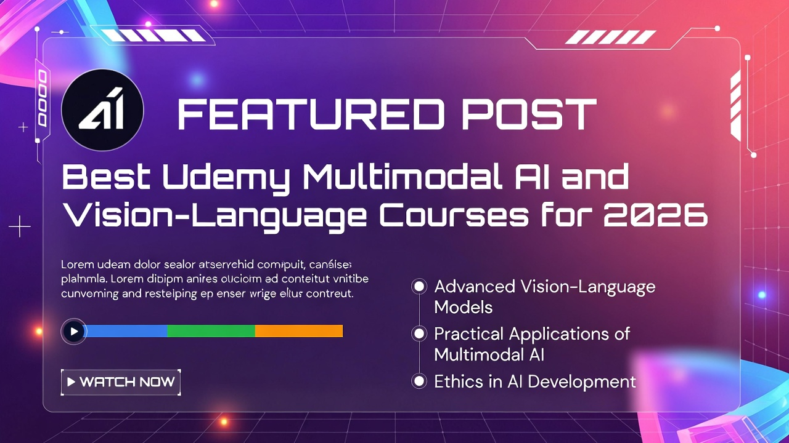

Best Udemy AI Video Courses 2026 – Monetize TikTok/YouTube Fast
Updated Feb 22, 2026
Read Review →
Browse all 68 expert guides and reviews. Showing 8 articles on this page.
Discover the best Udemy AI video creation courses for 2026. Create viral short-form content for TikTok, YouTube Shorts, and Facebook Reels with Super AI tools — reviewed, ranked, and with active discounts. Updated February 2026.
Discover the best AWS AI courses on Udemy for 2026. From the AWS Certified AI Practitioner (AIF-C01) to hands-on Amazon Bedrock and Generative AI Developer courses — reviewed and ranked. Updated February 2026.
Looking for the best Canva AI courses on Udemy in 2026? We reviewed 5 top-rated courses covering Magic Studio, AI video creation, ChatGPT integration, and graphic design workflows. Updated February 2026.
Udemy is now integrated with ChatGPT. Discover how to access 290,000+ courses, get AI-powered recommendations, and find the right course faster.
Discover the 8 best free AI courses from Microsoft, Google, Amazon, and Harvard. Learn generative AI, machine learning, prompt engineering, and Python AI development at zero cost
We filtered through 10,000+ Python courses to find the absolute best options for beginners, data scientists, and web developers.

Top 7 Udemy multimodal AI courses (2026). Master CLIP, Whisper, vision-language models & RAG. Expert reviews, pricing & career ROI included.
Master ChatGPT with the best Udemy courses for 2026. From beginner to advanced, discover GPT-5 training, prompt engineering mastery, and AI productivity automation that actually delivers results.